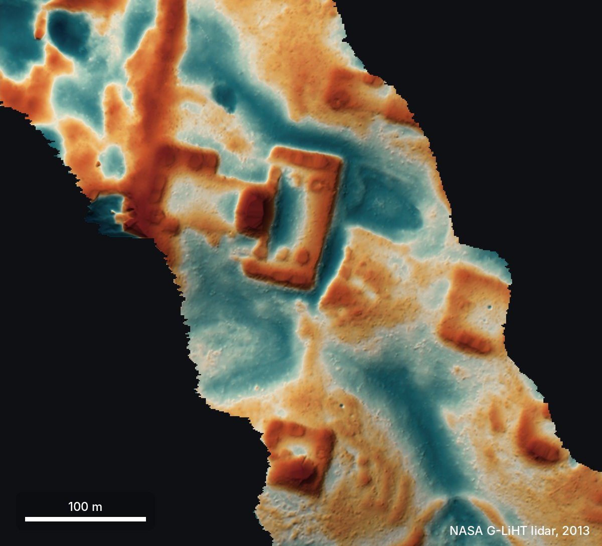
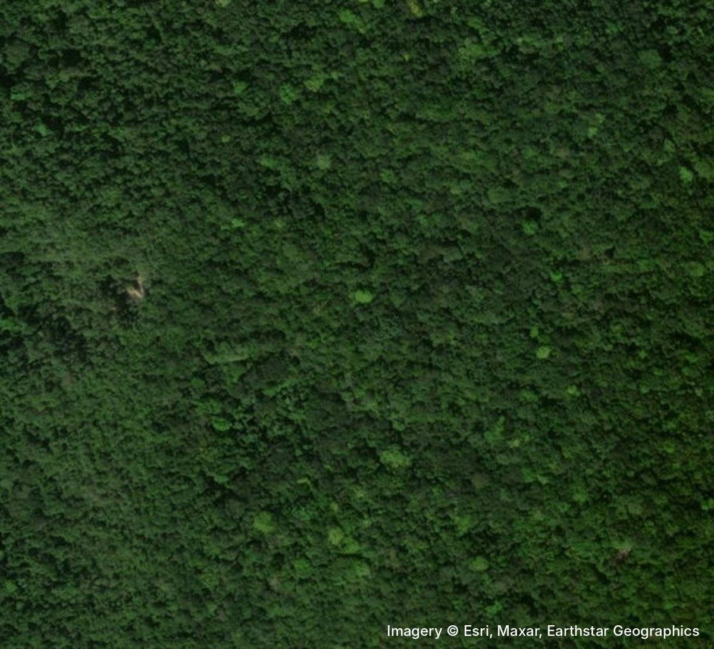
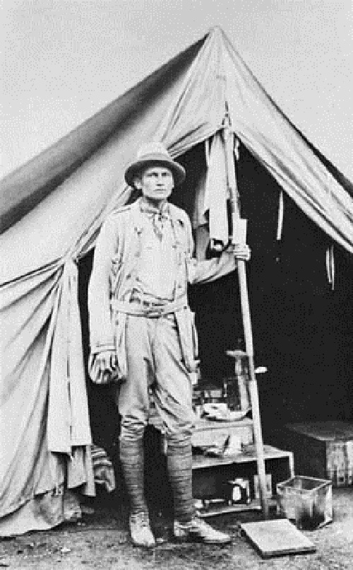
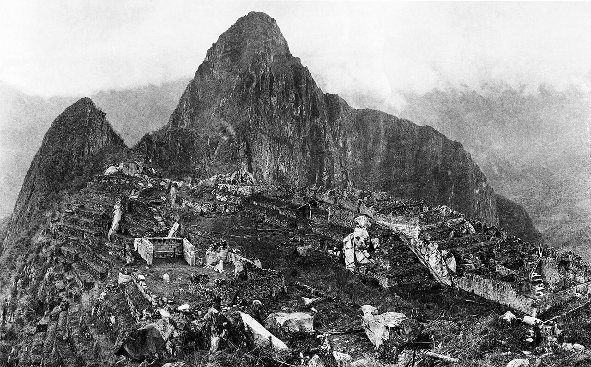
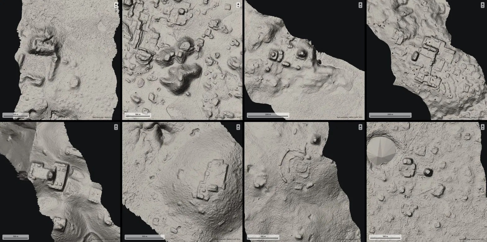
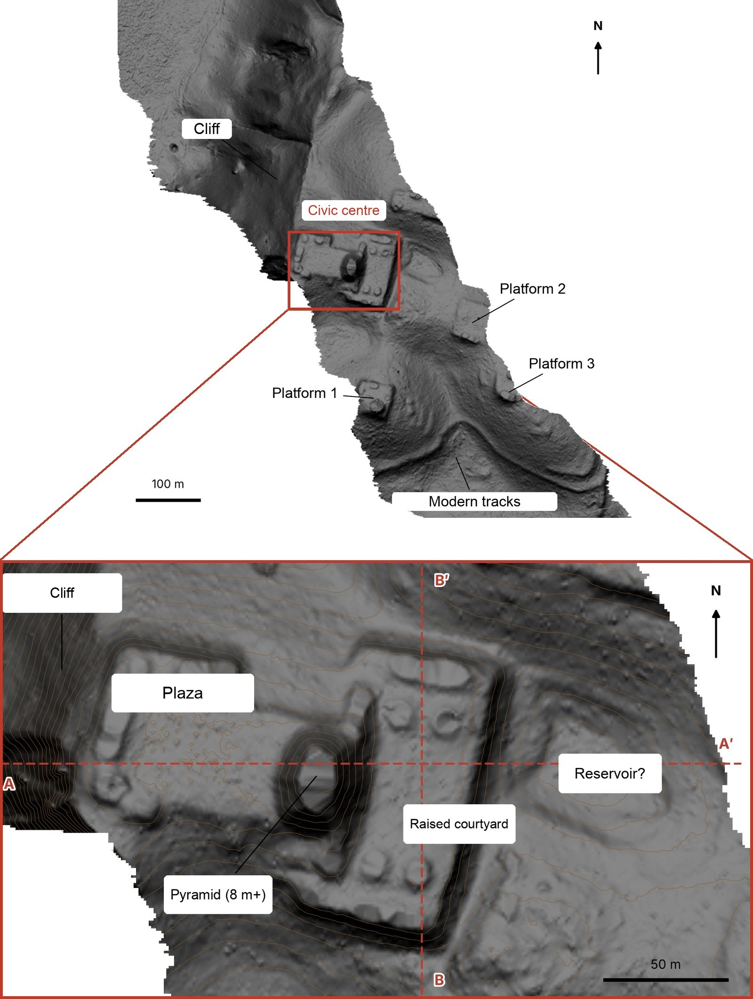
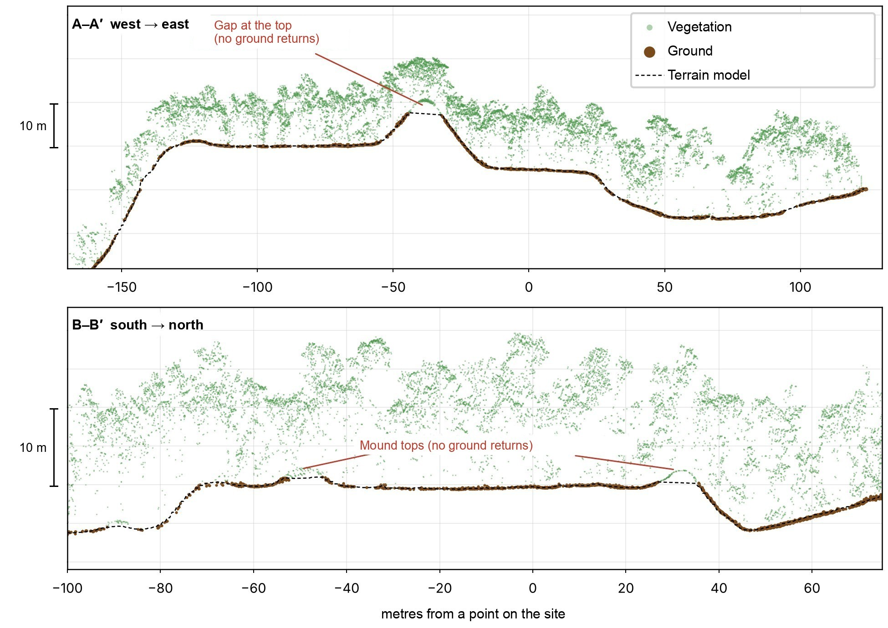
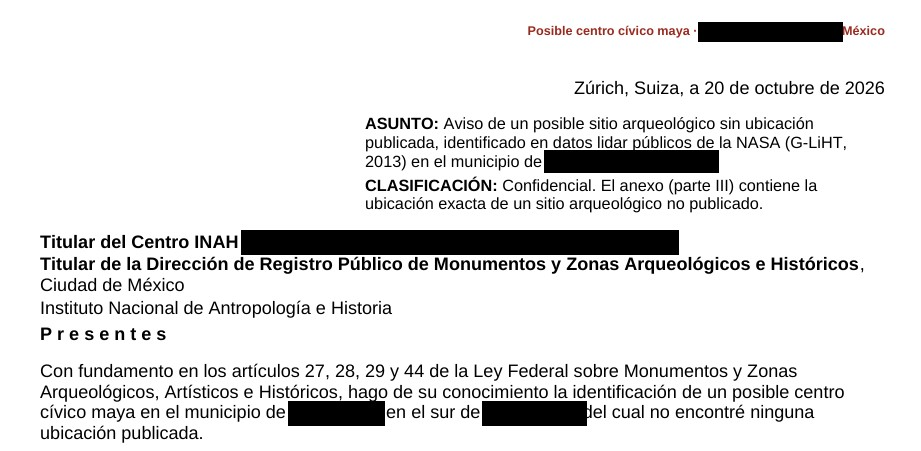
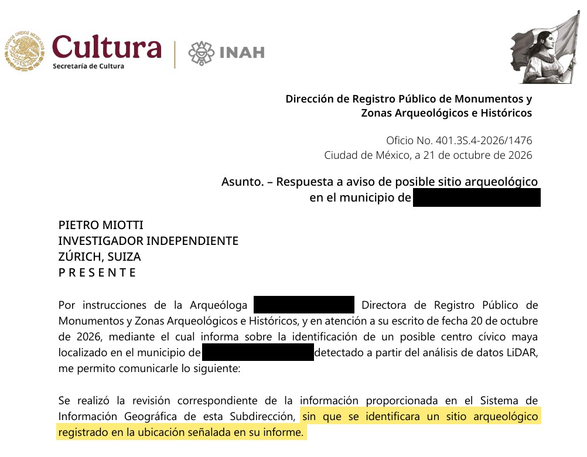
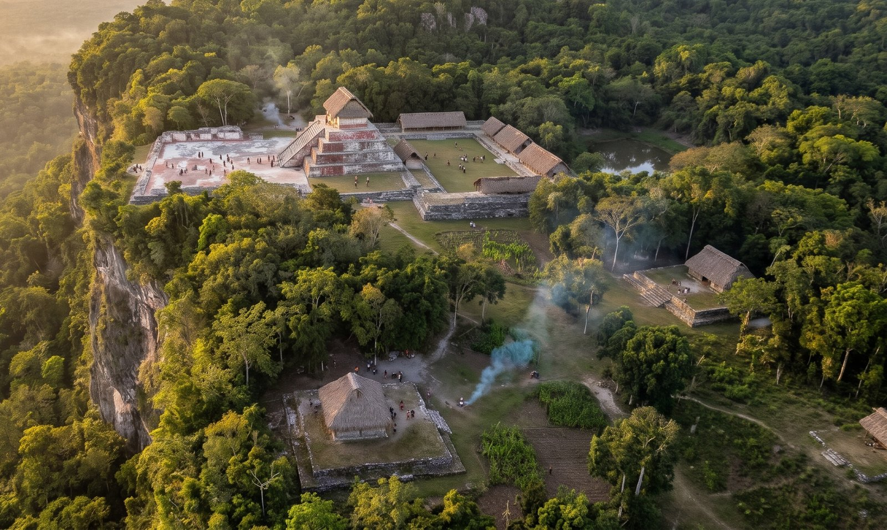

My AI Agents (Re)discovered a Maya Site in 72 Hours
Update (11 November): it turns out the site had already been mapped in Estrada-Belli et al. 2025. The agents missed it while going through the literature, so they rediscovered it rather than discovered it (it just wasn't in the register of Mexico's National Institute of Anthropology and History, INAH, yet). Still work to do then! The rest of the story still holds.
By analyzing NASA lidar data, my AI agents found a Maya site in Mexico that wasn't in the official register. (It turned out archaeologists had mapped it already, more on that at the end.) It took less than 72 hours to go from a random thought while traveling to an official reply from the Mexican government. This is by far the best time ever to be alive.

Lidar: bare ground, 2013
Satellite image todayDisclaimer: I'm not an archaeologist.
I'm going to tell this story as a diary, because the timeline is probably the best part.
18 October
I was traveling in Peru, Gemini-ing about the history of the place, when I learned about Hiram Bingham, the American explorer who "discovered" Machu Picchu in 1911. "What luck!" I thought. He was actually looking for a different city, Vilcabamba, the last refuge of the Incas, when a local farmer in the valley below guided him to the ruins. "Imagine if Bingham had our tools," I thought. "What would he do?"


I brainstormed a bit with a few agents (Gemini, ChatGPT, Claude and Grok), and they all said lidar. From above, a ruin in the jungle is just a bunch of trees (like Machu Picchu before it was cleared), so satellite photos don't help much. Lidar, instead, fires laser pulses through the gaps in the canopy and maps the ground underneath.[1]
So the agents went looking for lidar data. Peru isn't well covered, and hiring a company to do a survey meant permits, costs and bureaucracy, so I gave up on that. Then I thought: why not the Maya? Their region is much better covered by public lidar.
That night, I asked the agents to analyze it and went to bed.
19 October
I woke up and checked the agents' reports. 'DAMN!' They had found lots of villages and other regular shapes that looked like structures or houses.

So how did they do it? They turned the lidar strips (about 1,200 km² of jungle) into images, and 48 agents went through them one by one like very patient archaeologists, looking for pyramids, platforms, and plazas while filtering out natural hills, sinkholes, and roads. There was no special model or classifier involved: the agents literally looked at the pictures, following a precise guide.
Me: That's awesome! Please check which of these villages haven't been discovered yet. Search both the literature and the archives.
…a few hours later…
Agent: One major village doesn't seem to have been registered.
This is the hilltop from the top of this post. It sits on the edge of a cliff, under the jungle, and it has straight edges and sharp corners. Nature doesn't really do straight lines.
Zooming in, there's a levelled plaza, an oval pyramid at least 8–12 m tall, a raised courtyard attached to it and a flat-bottomed hollow that might have been a water reservoir.

And this is what it looks like in 3D.
Me: OK, what should I do?
Agent: You should contact INAH (Mexico's National Institute of Anthropology and History), write a report on your discovery, and check whether the site is in their register. Sometimes they have unpublished results.
Me: OK, how do I contact INAH? How does the reporting process work?
Agent: …instructions for the report… + email addresses
Me: OK, please do the report.
And I went to bed.
20 October
I iterated on the report a bit, since a few things were off, and translated it into Spanish to improve the chances of getting a reply (at least, that's what Claude suggested). I don't speak Spanish, so I had to trust the agents on that one.
The agents also checked the raw point cloud, to make sure the shapes were really on the ground and not created by the trees. Green dots are leaves, brown dots are the ground.

Then I sent the report to INAH.

21 October
INAH replied: they checked their records and found no registered archaeological site at that location.

At that point I thought nobody had put it on a map before. I was wrong (see below).
So what was it?
This part is speculation, from a long chat with the agents. It looks like a small Maya civic centre from the Classic period (roughly AD 250–900), basically the "downtown" of a local elite. The plaza is where people gathered, for ceremonies and maybe even a market. The pyramid was probably a temple, and the raised courtyard next to it might have been where the local ruler lived. The hollow could have been an aguada, a rainwater reservoir: Maya towns needed them to get through the dry season. Or it's just a hole. The three platforms around were probably houses.
I asked Gemini to imagine how it looked back then:

For similar studies, have a look at how NASA's G-LiHT instrument works (Cook et al. 2013) and how lidar collected for environmental research can be reused for archaeology (Golden et al. 2016). In 2024, archaeologists found a whole Maya city in Mexico this way (Auld-Thomas et al. 2024), others mapped settlements across the Maya lowlands, including this very site (Estrada-Belli et al. 2025), and another study found what may have been ancient Maya marketplaces (Šprajc 2026).
What's next
The site is now in the hands of the people who should have it: Mexico's National Institute of Anthropology and History (INAH) and the archaeologists who mapped it first. If anything comes out of it, I'll post an update.
What I've learned
You can just do things. I'm not an archaeologist, so I didn't know this was supposed to be hard. I just picked an old problem, tried the most obvious thing and threw some compute at it. Being a naive outsider might be a superpower now.
And it turned out professional archaeologists had already mapped the same site. I guess that's a good sign: an outsider with agents ended up in a similar place to the experts.
And I don't think this is really about archaeology. So far, most agentic AI stories have been about coding, math and physics, but it's much more general than that, and I hope this small example makes it a bit more obvious. We are on the brink of a revolution in all the sciences, and the only bottlenecks left will be curiosity and imagination (and compute).
At this point, we should probably lidar the whole planet and let the agents discover the rest.
-
If you don't know how lidar works, copy and paste this prompt into your favorite AI tool: "Build an HTML page that explains how lidar works, with beautiful visualizations." ↩